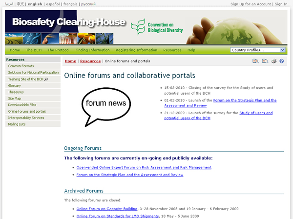

La página de Foros y Portales en línea proporciona varios enlaces a foros y portales que pueden ayudarle al usuario del CIISB a encontrar más información. Esta página está organizada en varias secciones:
-
La sección de Noticias de Foros, que aparece en la parte superior de la página, muestra una lista de las últimas noticias de los foros.
-
La sección de Foros en Curso proporciona una lista de enlaces a foros actualmente activos.
-
La sección de Foros Archivados proporciona una lista de enlaces a foros cerrados.
-
La sección Encuestas Archivadas proporciona acceso a una lista de encuestas llevadas a cabo con anterioridad.
-
La sección de Portales Colaborativos proporciona enlaces a varios portales relacionados con la bioseguridad, en los cuales el usuario podrá encontrar más información y asistencia.
